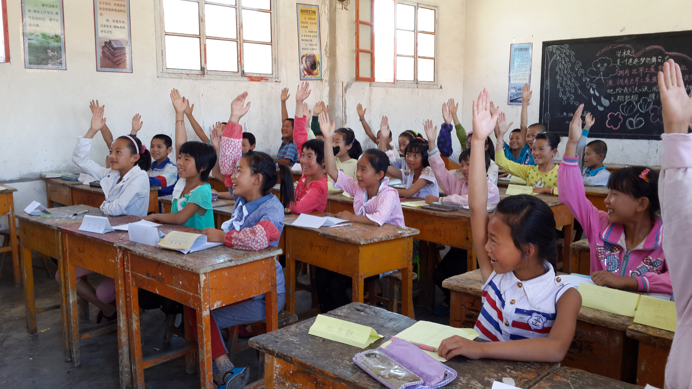
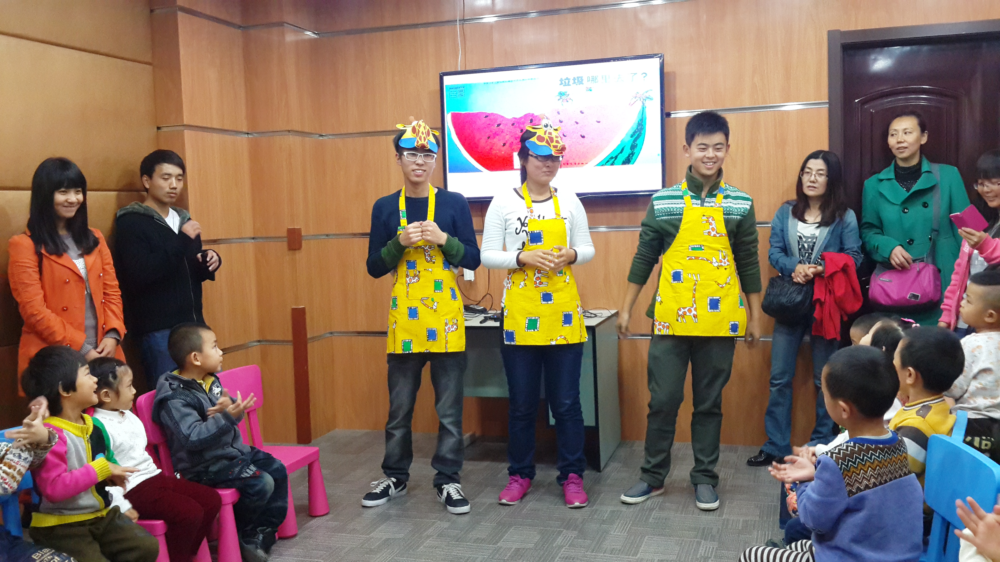

-
Course Consultant, Shanghai Jiwei Translation Co.,Ltd, Changchu, China
Led a group with 20 team members to popularize interpretation courses and CATTI certificate related courses twice a week in university campuses
The performance ranked top 10% in the company -
Volunteer, Global Citizen Program AIESEC, Bogota, Colombia
 Accompanied more than 300 people with Down syndrome
Accompanied more than 300 people with Down syndrome
Designed games to help patients with physical fitness
Assisted teachers to help patients speak smoothly
Showed patients Chinese cultural characteristics -
Teacher, Minquan Primary Central School, Wuwei, China
 Taught 250 students from five grades
Planned and organized a large-scale art show with a duration of 3 hours -
Minister of External Liaison Department, JLU Chinese Volunteer Federation, Changchun, China
 Planned and organized voluntary teaching the program in summer holiday
Organazed the selection of volunteers and attracted about one thousand college students to register
Trained more than 100 volunteers for the program
×